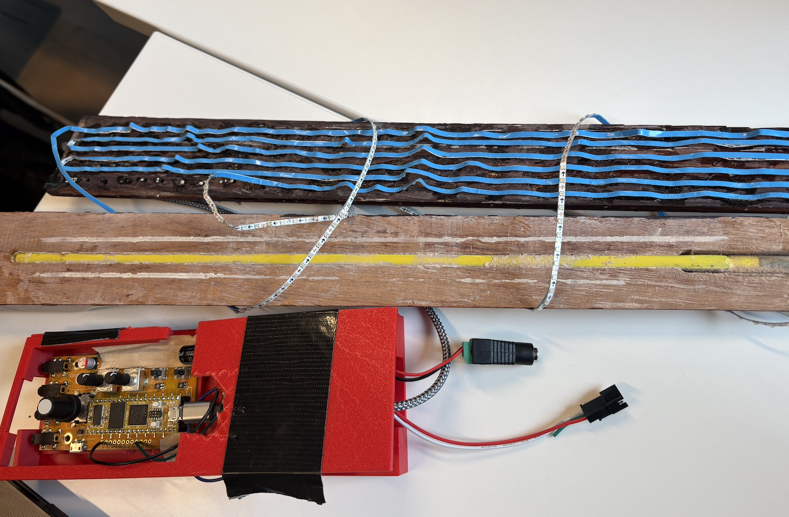
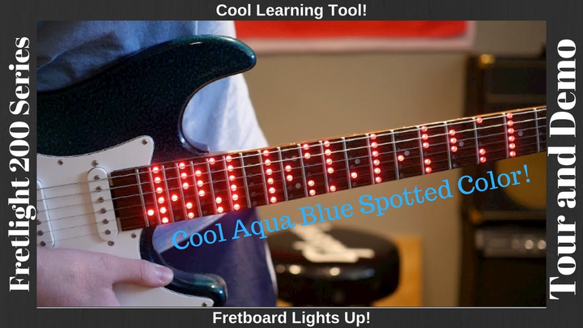
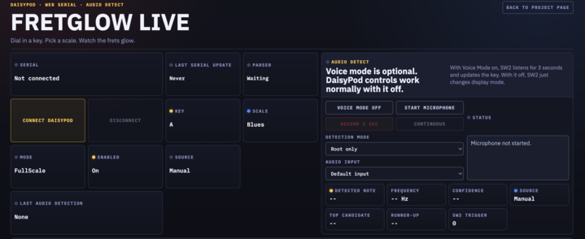
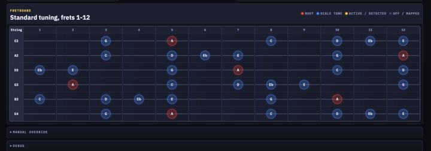

DaisyPod controls workingBrowser visualizer workingPhysical LED chain damaged after mount

Hero Imageassets/led_lights.png
The original physical display used a narrow WS2812B strip mounted along the fretboard path.
Demo video
Final project demo video
The demo shows the physical DaisyPod controller, the browser fretboard visualizer, the LED-strip failure path, and the working recovery system.
Demo video loadingassets/demo.mp4
What it does
Physical controller driving a live fretboard map
The final reliable demo is a hybrid physical/digital instrument interface: the DaisyPod is the controller, the browser is the fretboard display, and the microphone can update the key from guitar audio.
The visualizer renders six strings and twelve frets in standard tuning. Root notes are red, scale tones are electric blue, and all-mapped/debug views use neutral labels. Manual browser controls remain available if Web Serial is not connected.
DaisyPod control map
Pot 1
Key
Pot 2
Scale
Encoder
Brightness
SW1
On / off
SW2
Mode / Voice Mode trigger
The browser visualizer also keeps manual controls for key, scale, mode, brightness, and enabled state.
Original concept
A non-destructive LED overlay for guitar practice
The original idea was to light scale positions directly on the fretboard instead of looking at a chart, phone app, or purpose-built LED guitar. FretGlow tried to make that idea into a retrofit physical prototype.

Inspirationassets/fretlight_original_inspo.png
Reference point: commercial LED fretboard systems show why direct-on-neck visualization is useful.
LED Materialsassets/led_lights.png
The physical build used a narrow WS2812B strip so the LEDs could sit close to fret positions.
Hardware
The system I actually built
The hardware was a real instrument-scale prototype: DaisyPod controller, level shifter, external 5V LED power, breadboard wiring, a narrow LED strip, and a 3D printed tray to keep the controller assembly together.
Guitar Buildassets/guitar_pieces.png
Physical integration: guitar pieces, fretboard surface, and LED mounting work.
Electronics
DaisyPod embedded controller
WS2812B 2.7mm ultra-narrow LED strip, 5V, 160 LEDs/m
SN74AHCT125N / 74AHCT125 level shifter
470Ω resistor in series with LED data
Capacitor across 5V and GND near the LED rail
External 5V LED power supply
Shared ground between DaisyPod, level shifter, and LED strip
Breadboard/prototyping wiring during debug
DaisyPod D10
→
74AHCT125 level shifter
→
470Ω resistor
→
WS2812B data in
5V supply → LED strip + level shifterUSB → DaisyPodShared ground across everything
Wiring Closeupassets/wiring_closeup.jpg
Closeup of the breadboarded signal path. The physical wiring ended up mattering as much as the firmware.
Firmware / musical mapping
The music mapping was not the hard part. The signal integrity was.
The embedded C++ maps standard tuning to pitch classes, compares each fret against the selected scale template, and chooses colors for roots, scale tones, or all mapped positions.
Open strings
E A D G B E are represented as MIDI 40, 45, 50, 55, 59, and 64.
Scale templates
Major, Natural Minor, Major Pentatonic, Minor Pentatonic, Blues, Dorian, and Mixolydian.
Modes
FullScale, RootsOnly, and AllMapped. These same modes are mirrored in the browser visualizer.
Fault handling
When individual LEDs became unreliable, bad positions were calibrated and disabled in firmware when possible.
const int OPEN_STRINGS[6] = {40, 45, 50, 55, 59, 64};
int pc = (OPEN_STRINGS[string_idx] + fret_idx + 1) % 12;
Firmwareassets/guitar_code.png
Embedded C++ on DaisyPod, plus the serial-controller recovery firmware used by the live visualizer.
Tray
3D printed controller tray made prototype demoable
The tray was designed in Fusion 360 and printed on a Bambu printer. It holds the DaisyPod and breadboard together so the controller can move as one unit instead of becoming a loose pile of wires.
Controller Trayassets/controller_tray.png
Open-top tray: useful for probing, rewiring, and keeping the DaisyPod plus breadboard physically connected.
CADassets/fusion_tray.png
Fusion/CAD view for the controller tray. A later revision could add a cover and stronger cable strain relief.
Debugging
The physical signal path was the hard part
The WS2812B data chain worked during testing, but it became unreliable after mounting on the neckboard. Power still reached the strip, but data did not reliably pass down the chain around an early LED / data break.
Timing-sensitive LEDs
WS2812B LEDs interpret one strict serial data stream. Loose wiring or weak edges caused flickering, random colors, and unstable strip behavior.
Measured the signal path
I verified DaisyPod D10, the level-shifter output, 5V rail, and shared ground with a multimeter while isolating firmware versus wiring issues.
Reworked connections
Noisy jumper wires were replaced or reinforced with soldered connections. Some individual bad LEDs were masked in firmware when needed.
Mounting failure
The physical LEDs worked until the neckboard mount damaged the data chain. That failure became the turning point for the browser recovery demo.
Visualizer
The fallback kept the real controller and moved the fretboard display into the browser
The visualizer is not just a mockup. It is controlled by the same DaisyPod hardware and uses the same pitch-class mapping logic as the embedded LED system.

Digital Visualizerassets/fretglow_digital.png
The final reliable display path: a Web Serial browser fretboard controlled by DaisyPod.
What changed
DaisyPod streams compact JSON state over USB serial.
The browser reads the stream with the Web Serial API.
The fretboard renders live with plain HTML/CSS/JS.
The same pitch-class mapping drives the displayed note positions.
Manual controls remain available for fallback demos.
Pitch-class/root estimation, not chord recognition
The browser can use microphone input to estimate a stable pitch class from guitar audio and update the visualizer key. It works best when I play a single note or strongly emphasize the root.
Root-only detection is the reliable mode. Major/minor/pentatonic inference needs multiple confident pitch classes and should be treated as a lightweight guess, not a full theory engine.
Audio path
Start microphone in Chrome or Edge.
Record a short detection window.
Estimate frequency with browser audio buffers.
Convert frequency to MIDI, then pitch class.
Update the visualizer key if the result is stable.
Result
A working hybrid physical/digital instrument interface
The physical LED prototype was built and partially working. The DaisyPod controller, musical mapping, digital visualizer, and microphone pitch/root detection are working. The browser visualizer became the final reliable demo path after the LED strip was damaged.
Working now
DaisyPod controls browser visualizer over USB serial.
Key, scale, mode, and enabled state update the fretboard map.
Microphone pitch/root detection updates the key.
Controller tray and electronics are built and documented.
Documented limitation
The physical LED strip/data chain is not the final reliable display path after the mounting damage. The hardware effort is still central to the project because it drove the controller design, wiring, firmware, and recovery path.

Final Visualassets/fretglow_visual.png
Final reliable demo: physical DaisyPod controller, digital fretboard display, and optional audio key detection.
Future work
What I would build next
Rebuild LED strip
Add stronger strain relief and replace the damaged data-chain section.
Custom board
Move the level shifter, resistor, capacitor, and connectors off the breadboard.
Locking connectors
Use JST or locking connectors for power and data instead of loose jumpers.
Better neck mount
Make a cleaner non-destructive fretboard mount with less stress on tiny LED pads.
MIDI input
Let external software or a MIDI controller choose keys, scales, and practice modes.
Audio improvements
Improve pitch tracking and add chord, arpeggio, and phrase visualization.
Files / source
Submission links
These links point to the source files, live visualizer, project notes, CAD evidence, and final demo video.